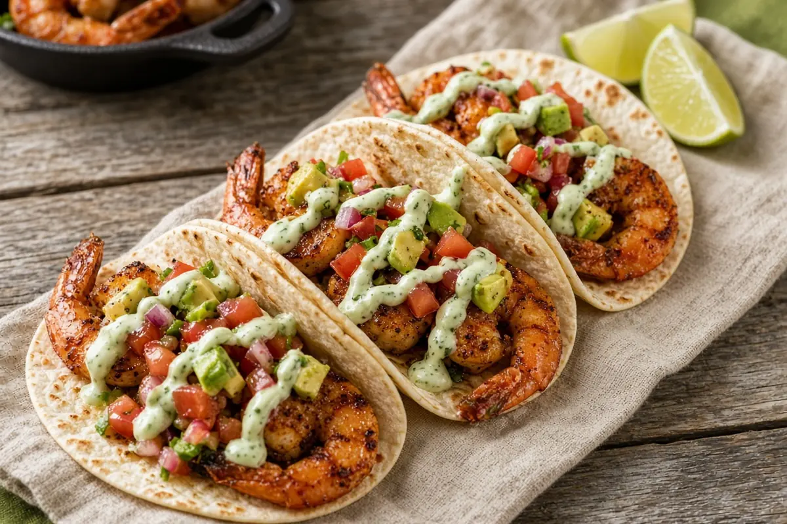

Spicy Shrimp Tacos with Avocado Salsa and Cilantro Sour Cream
Cumin and chili-spiced shrimp seared hot in cast iron, piled on warm tortillas with chunky avocado salsa and a cilantro-lime sour cream.

Adapted from gimmedelicious.com
3 servings
By
Yield: 3 servings (6 tacos)
Prep:
Cook:
Total:
Difficulty: Easy
Ingredients
- 1 lb shrimp, peeled and deveined
- 1 1/2 Tbsp olive oil, for the marinade
- 1 clove garlic, minced
- 1/2 tsp ground cumin
- 1/2 tsp chili powder
- 1/4 tsp onion powder, optional
- 1/4 tsp kosher salt
- 1 Tbsp olive oil, for the pan
- Squeeze of lime, optional
- 1 tomato, seeded and chopped
- 1 avocado, peeled, pitted, and cut into chunks
- 1 jalapeño, seeded and chopped
- 1/2 tsp salt, for the salsa
- 1/4 tsp black pepper
- 1 Tbsp fresh lime juice, for the salsa
- 1/4 cup loosely packed fresh cilantro leaves, coarsely chopped
- 6 small flour tortillas
- 1/4 cup sour cream
- 2 Tbsp finely chopped cilantro, for the sauce
- 1 Tbsp fresh lime juice, for the sauce
- Lime wedges, for serving
Instructions
- Whisk the olive oil for the marinade with the garlic, cumin, chili powder, onion powder, and kosher salt. Toss the shrimp in it, cover, and refrigerate 10 minutes.
- Gently stir the tomato, avocado, jalapeño, salt for the salsa, black pepper, lime juice for the salsa, and cilantro leaves together. Stir the sour cream with the cilantro and lime juice for the sauce in another bowl.
- Heat a cast-iron skillet over high heat. Add the olive oil for the pan and the shrimp and cook over medium-high, turning, until pink and cooked through, about 5 minutes. Finish with a squeeze of lime.
- Char the tortillas over a gas flame or in a dry skillet if you like. Spoon avocado salsa onto each warm tortilla, top with shrimp, drizzle with the cilantro sour cream, and serve with lime wedges.
Notes: AnyList showed this tripled; amounts are back at 1x. The shrimp can marinate up to 24 hours ahead. To keep leftover salsa green, press plastic wrap right onto its surface.